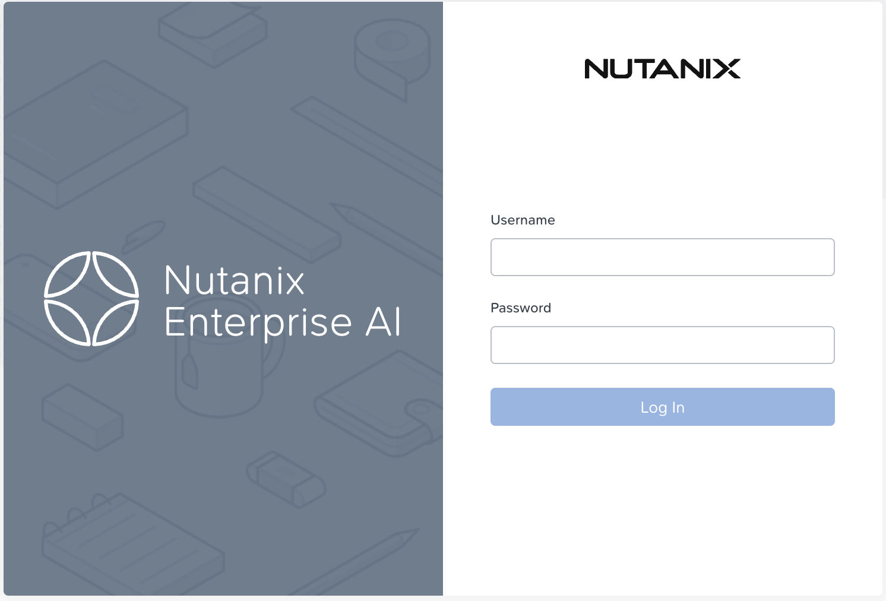
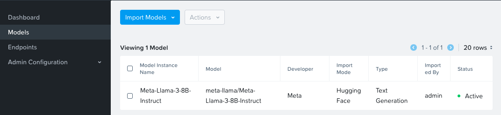

Deploying Nutanix Enterprise AI (NAI) NVD Reference Application
Version 2.6.0
This version of the NAI deployment is based on the Nutanix Enterprise AI (NAI) v2.6.0 release.
stateDiagram-v2
direction LR
state DeployNAI {
[*] --> DeployNAIAdmin
DeployNAIAdmin --> InstallSSLCert
InstallSSLCert --> DownloadModel
DownloadModel --> CreateNAI
CreateNAI --> [*]
}
[*] --> PreRequisites
PreRequisites --> DeployNAI
DeployNAI --> TestNAI : next section
TestNAI --> [*]Prepare for NAI Deployment
Early Access(EA)/Technical Preview(TP) Software with NAI v2.6.0
In this lab, we will deploy EA and TP version of the following software to test the following:
-
Nutanix Enterprise AI
- Unified Endpoints - multiple endpoints for HA and token-based rate limiting
- Providers - Add remote endpoints from providers to utilize their models in Nutanix Enterprise AI workloads.
Info
Changes in NAI v2.6.0
- Kserve is of at least of
v0.15.0 - Cert-manager is at least of
v1.17.2 - OpenTelemetry operator is at least of
v0.102.0 - Envoy Gateway is at least of
v1.6.3
Enable Pre-requisite Applications
Prometheus and Cert Manager
The following pre-requisite applications will be enabled on NKP GUI:
Note
In this lab, we will be using the Management Cluster Workspace to deploy our Nutanix Enterprise AI (NAI)
However, in a customer environment, it is recommended to use a separate workload NKP cluster.
Info
The helm charts and the container images for these applications are stored in internal Harbor registry. These images got uploaded to Harbor at the time of install NKE in this section.
- In the NKP GUI, Go to Clusters
- Click on Management Cluster Workspace
- Go to Applications
-
Search and enable the following applications: follow this order to install dependencies for NAI application
- Kube-prometheus-stack: version
71.0.0or later (pre-installed on NKP cluster) - Cert-manager - v1.17.2
Cert-manager - v1.17.2
The following application are pre-installed on NKP cluster with Pro license
- Cert Manager
v1.17.2or higher
Check if Cert Manager is installed (pre-installed on NKP cluster if license is installed)
If not installed, use the following command or NKP Applications GUI to install it
- Kube-prometheus-stack: version
The following pre-requisite applications will be enabled from the command line on the jumphost VM.
Envoy Gateway
-
Login to VSC on the jumphost VM, append the following environment variables to the
$HOME\airgap-nai\.envfile and save itexport NAI_USER=_your_desired_nai_ui_username export NAI_TEMP_PASS=_your_desired_nai_ui_password # At least 8 characters export REGISTRY=_your_private_registry export REGISTRY_USERNAME=admin export REGISTRY_PASSWORD=_your_private_registry_password export REGISTRY_EMAIL=admin export IMAGE_PULL_SECRET=_your_desired_pull_secret_name -
IN VSC,go to Terminal and run the following commands to source the environment variables
-
Create Kubernetes namespaces and docker-registry secrets for Envoy Gateway System
-
Enable Envoy Gateway CRDs
v1.6.3in AI gateway modePulled: harbor.10.x.x.x.nip.io/nutanix/gateway-crds-helm:v1.6.3 Digest: sha256:55a2c0a4974cc2a83b9e144ec5b9ac687f0ae1b9d26ec178762184d0185db096 customresourcedefinition.apiextensions.k8s.io/backendtlspolicies.gateway.networking.k8s.io serverside-applied customresourcedefinition.apiextensions.k8s.io/gatewayclasses.gateway.networking.k8s.io serverside-applied customresourcedefinition.apiextensions.k8s.io/gateways.gateway.networking.k8s.io serverside-applied customresourcedefinition.apiextensions.k8s.io/grpcroutes.gateway.networking.k8s.io serverside-applied customresourcedefinition.apiextensions.k8s.io/httproutes.gateway.networking.k8s.io serverside-applied customresourcedefinition.apiextensions.k8s.io/referencegrants.gateway.networking.k8s.io serverside-applied customresourcedefinition.apiextensions.k8s.io/tcproutes.gateway.networking.k8s.io serverside-applied customresourcedefinition.apiextensions.k8s.io/tlsroutes.gateway.networking.k8s.io serverside-applied customresourcedefinition.apiextensions.k8s.io/udproutes.gateway.networking.k8s.io serverside-applied customresourcedefinition.apiextensions.k8s.io/xbackendtrafficpolicies.gateway.networking.x-k8s.io serverside-applied customresourcedefinition.apiextensions.k8s.io/xlistenersets.gateway.networking.x-k8s.io serverside-applied customresourcedefinition.apiextensions.k8s.io/xmeshes.gateway.networking.x-k8s.io serverside-applied customresourcedefinition.apiextensions.k8s.io/backends.gateway.envoyproxy.io serverside-applied customresourcedefinition.apiextensions.k8s.io/backendtrafficpolicies.gateway.envoyproxy.io serverside-applied customresourcedefinition.apiextensions.k8s.io/clienttrafficpolicies.gateway.envoyproxy.io serverside-applied customresourcedefinition.apiextensions.k8s.io/envoyextensionpolicies.gateway.envoyproxy.io serverside-applied customresourcedefinition.apiextensions.k8s.io/envoypatchpolicies.gateway.envoyproxy.io serverside-applied customresourcedefinition.apiextensions.k8s.io/envoyproxies.gateway.envoyproxy.io serverside-applied customresourcedefinition.apiextensions.k8s.io/httproutefilters.gateway.envoyproxy.io serverside-applied customresourcedefinition.apiextensions.k8s.io/securitypolicies.gateway.envoyproxy.io serverside-applied -
Prepare values file for configuring advanced features for envoy gateway in AI gateway mode.
cat << EOF > eg-config-for-gateway-mode.yaml # This file configures Envoy Gateway for AI Gateway mode with rate limiting config: envoyGateway: gateway: controllerName: "gateway.envoyproxy.io/gatewayclass-controller" logging: level: default: "info" provider: kubernetes: rateLimitDeployment: container: image: "${REGISTRY}/nutanix/nai-ratelimit:99d85510" patch: type: "StrategicMerge" value: spec: template: spec: containers: - imagePullPolicy: "IfNotPresent" name: "envoy-ratelimit" image: "${REGISTRY}/nutanix/nai-ratelimit:99d85510" type: "Kubernetes" extensionApis: enableEnvoyPatchPolicy: true enableBackend: true extensionManager: maxMessageSize: 11Mi backendResources: - group: inference.networking.k8s.io kind: InferencePool version: v1 hooks: xdsTranslator: translation: listener: includeAll: true route: includeAll: true cluster: includeAll: true secret: includeAll: true post: - "Translation" - "Cluster" - "Route" service: fqdn: hostname: "ai-gateway-controller.nai-system.svc.cluster.local" port: 1063 rateLimit: backend: type: "Redis" redis: url: "redis-sentinel.nai-system.svc.cluster.local:6379" EOFcat << EOF > eg-config-for-gateway-mode.yaml # This file configures Envoy Gateway for AI Gateway mode with rate limiting config: envoyGateway: gateway: controllerName: "gateway.envoyproxy.io/gatewayclass-controller" logging: level: default: "info" provider: kubernetes: rateLimitDeployment: container: image: "harbor.10.x.x.x.nip.io/nutanix/nai-ratelimit:99d85510" patch: type: "StrategicMerge" value: spec: template: spec: containers: - imagePullPolicy: "IfNotPresent" name: "envoy-ratelimit" image: "harbor.10.x.x.x.nip.io/nutanix/nai-ratelimit:99d85510" type: "Kubernetes" extensionApis: enableEnvoyPatchPolicy: true enableBackend: true extensionManager: maxMessageSize: 11Mi backendResources: - group: inference.networking.k8s.io kind: InferencePool version: v1 hooks: xdsTranslator: translation: listener: includeAll: true route: includeAll: true cluster: includeAll: true secret: includeAll: true post: - "Translation" - "Cluster" - "Route" service: fqdn: hostname: "ai-gateway-controller.nai-system.svc.cluster.local" port: 1063 rateLimit: backend: type: "Redis" redis: url: "redis-sentinel.nai-system.svc.cluster.local:6379" EOF -
Enable Envoy Gateway
v1.6.3in AI gateway modehelm upgrade --install eg oci://${REGISTRY}/nutanix/gateway-helm \ --version v1.6.3 \ -n envoy-gateway-system \ --create-namespace --wait \ --set global.images.envoyGateway.image=${REGISTRY}/nutanix/nai-gateway:v1.6.3 \ --set global.images.ratelimit.image=${REGISTRY}/nutanix/nai-ratelimit:99d85510 \ --set global.imagePullSecrets[0].name=${IMAGE_PULL_SECRET} \ -f ./eg-config-for-gateway-mode.yamlhelm upgrade --install eg oci://harbor.10.x.x.x.nip.io/nutanix/gateway-helm \ --version v1.6.3 \ -n envoy-gateway-system \ --create-namespace --wait \ --set global.images.envoyGateway.image=harbor.10.x.x.x.nip.io/nutanix/nai-gateway:v1.6.3 \ --set global.images.ratelimit.image=harbor.10.x.x.x.nip.io/nutanix/nai-ratelimit:99d85510 \ --set global.imagePullSecrets[0].name=private-regcred \ -f ./eg-config-for-gateway-mode.yamlRelease "eg" does not exist. Installing it now. Pulled: harbor.10.x.x.x.nip.io/nutanix/gateway-helm:v1.6.3 Digest: sha256:924799edea136fe405ea37480f5d5e65a81c6b01e3cbe53bf2ab5cde935ef0d6 NAME: eg LAST DEPLOYED: Tue Apr 7 07:04:05 2026 NAMESPACE: envoy-gateway-system STATUS: deployed REVISION: 1 TEST SUITE: None -
Create an EnvoyProxy custom resource to configure the Envoy data plane with private registry access:
cat <<EOF | kubectl apply -f - apiVersion: gateway.envoyproxy.io/v1alpha1 kind: EnvoyProxy metadata: name: nai-envoyproxy namespace: envoy-gateway-system spec: provider: type: Kubernetes kubernetes: envoyDeployment: pod: imagePullSecrets: - name: ${IMAGE_PULL_SECRET} container: image: "${REGISTRY}/nutanix/nai-envoy:distroless-v1.36.4" EOFcat <<EOF | kubectl apply -f - apiVersion: gateway.envoyproxy.io/v1alpha1 kind: EnvoyProxy metadata: name: nai-envoyproxy namespace: envoy-gateway-system provider: kubernetes: envoyDeployment: pod: imagePullSecrets: - name: private-regcred container: image: harbor.10.x.x.x/nip.io/nutanix/nai-envoy:distroless-v1.36.4 EOF -
Check if Envoy Gateway resources are ready
Kserve
-
Create kubernetes namespaces and docker-registry secrets for KServe
-
Run the Kserve CRD installation
Release "kserve-crd" does not exist. Installing it now. Pulled: harbor.10.x.x.x.nip.io/nutanix/kserve-crd:v0.15.0 Digest: sha256:01533cdda82c767fdd39172846f04c5185011eab2769b2c3d727bdd0f244a8f5 NAME: kserve-crd LAST DEPLOYED: Tue Apr 7 07:10:02 2026 NAMESPACE: kserve STATUS: deployed REVISION: 1 TEST SUITE: None -
Run the Kserve installation
helm upgrade --install kserve \ oci://${REGISTRY}/kserve \ --version v0.15.0 \ -n kserve \ --set controller.image.repository=${REGISTRY}/kserve-controller \ --set controller.image.tag=v0.15.0 \ --set kserve.controller.deploymentMode=RawDeployment \ --set kserve.controller.gateway.disableIngressCreation=truehelm upgrade --install kserve \ oci://harbor.10.x.x.x.nip.io/kserve \ --version v0.15.0 \ -n kserve \ --set controller.image.repository=harbor.10.x.x.x.nip.io/kserve-controller \ --set controller.image.tag=v0.15.0 \ --set kserve.controller.deploymentMode=RawDeployment \ --set kserve.controller.gateway.disableIngressCreation=truePulled: harbor.10.x.x.134.nip.io/nkp/kserve:v0.15.0 Digest: sha256:cafd90ab1d91a54a28c1ff2761d976bdda0bb173675ef392a16ac250b044d15f I0226 01:59:34.229355 555781 warnings.go:110] "Warning: spec.privateKey.rotationPolicy: In cert-manager >= v1.18.0, the default value changed from `Never` to `Always`." NAME: kserve LAST DEPLOYED: Tue Apr 7 07:10:05 2026 NAMESPACE: kserve STATUS: deployed REVISION: 1 TEST SUITE: None
OpenTelemetry
-
Create kubernetes namespaces and docker-registry secrets for OpenTelemetry
-
Run the OpenTelemetry operator installation
helm upgrade --install opentelemetry-operator oci://${REGISTRY}/nutanix/opentelemetry-operator \ --version 0.102.0 \ -n opentelemetry --create-namespace --wait \ --set manager.image.repository=${REGISTRY}/nutanix/nai-opentelemetry-operator \ --set manager.collectorImage.repository=${REGISTRY}/nutanix/nai-opentelemetry-collector-k8s \ --set kubeRBACProxy.image.repository=${REGISTRY}/nutanix/nai-kube-rbac-proxyhelm upgrade --install opentelemetry-operator oci://harbor.10.x.x.134.nip.io/opentelemetry-operator \ --version 0.102.0 \ -n opentelemetry --create-namespace --wait \ --set manager.image.repository=harbor.10.x.x.134.nip.io/nutanix/nai-opentelemetry-operator \ --set manager.collectorImage.repository=harbor.10.x.x.134.nip.io/nutanix/nai-opentelemetry-collector-k8s \ --set kubeRBACProxy.image.repository=harbor.10.x.x.134.nip.io/nutanix/nai-kube-rbac-proxyRelease "opentelemetry-operator" does not exist. Installing it now. Pulled: harbor.10.x.x.134/nutanix/opentelemetry-operator:0.102.0 Digest: sha256:1616912e98fbce5236707de9f7c8b91a98c9ecef6c207f625d9d5fa7683a31c8 I0407 08:26:51.082158 1388823 warnings.go:107] "Warning: spec.privateKey.rotationPolicy: In cert-manager >= v1.18.0, the default value changed from `Never` to `Always`." NAME: opentelemetry-operator LAST DEPLOYED: Tue Apr 7 08:26:49 2026 NAMESPACE: opentelemetry STATUS: deployed REVISION: 1 NOTES: [WARNING] No resource limits or requests were set. Consider setter resource requests and limits via the `resources` field.
Deploy NAI
-
Append the following environment variables to the
$HOME\airgap-nai\.envfile and save itexport NAI_API_RWX_STORAGECLASS=_desired_rwx_files_storageclass_created_in_previous_section export NAI_DEFAULT_RWO_STORAGECLASS=_desired_rwo_volume_storageclass export NKP_WORKSPACE_NAMESPACE=_desired_nkp_workspace # (1)!-
Get the values for the NKP workspace using the following commands:
nkp get workspaces # Get the names of workspaces # NAME NAMESPACE # default-workspace kommander-default-workspace # kommander-workspace kommander nkp get clusters -w kommander-workspace # Ensure the target cluster is in the correct workspace # WORKSPACE NAME KUBECONFIG STATUS # kommander-workspace host-cluster kommander-self-attach-kubeconfig Joined
-
-
Source the environment variables (if not done so already)
-
In
VSCodeExplorer pane, browse to$HOME/airgap-naifolder -
Run the following command to create a helm values file:
cat <<EOF > darksite-nai-operators.yaml global: imagePullSecrets: - name: ${IMAGE_PULL_SECRET} naiRedis: naiRedisImage: name: ${REGISTRY}/nutanix/nai-redis naiJobs: naiJobsImage: image: ${REGISTRY}/nutanix/nai-jobs nai-clickhouse-operator: operator: image: registry: ${REGISTRY} repository: nutanix/nai-clickhouse-operator metrics: image: registry: ${REGISTRY} repository: nutanix/nai-clickhouse-metrics-exporter ai-gateway-helm: extProc: image: repository: ${REGISTRY}/nutanix/nai-ai-gateway-extproc controller: image: repository: ${REGISTRY}/nutanix/nai-ai-gateway-controller EOFglobal: imagePullSecrets: - name: private-regcred naiRedis: naiRedisImage: name: harbor.10.x.x.134.nip.io/nutanix/nai-redis naiJobs: naiJobsImage: image: harbor.10.x.x.134.nip.io/nutanix/nai-jobs nai-clickhouse-operator: operator: image: registry: harbor.10.x.x.134.nip.io repository: nutanix/nai-clickhouse-operator metrics: image: registry: harbor.10.x.x.134.nip.io repository: nutanix/nai-clickhouse-metrics-exporter ai-gateway-helm: extProc: image: repository: harbor.10.x.x.134.nip.io/nutanix/nai-ai-gateway-extproc controller: image: repository: harbor.10.x.x.134.nip.io/nutanix/nai-ai-gateway-controller -
Install nai-operators helm chart in the nai-system namespace
Release "nai-operators" does not exist. Installing it now. Pulled: harbor.10.x.x.134/nutanix/nai-operators:2.6.0 Digest: sha256:06d4b66a5d64add26bc6cc0f0864482ddabcdf735e05ab2a5ba347fcf4deae9b I0407 07:33:29.955493 1376860 warnings.go:107] "Warning: spec.template.spec.containers[1].ports[0]: duplicate port name \"metrics\" with spec.template.spec.containers[0].ports[0], services and probes that select ports by name will use spec.template.spec.containers[0].ports[0]" I0407 07:33:29.976628 1376860 warnings.go:107] "Warning: spec.privateKey.rotationPolicy: In cert-manager >= v1.18.0, the default value changed from `Never` to `Always`." NAME: nai-operators LAST DEPLOYED: Tue Apr 7 07:33:28 2026 NAMESPACE: nai-system STATUS: deployed REVISION: 1 TEST SUITE: None -
Verify all three nai-operator pods are running. Note that
ai-gateway-controller-pod is also running as we are installing AI Gateway features -
Run the following command to create a helm values file:
cat <<EOF > darksite-nai-core.yaml global: imagePullSecrets: - name: ${IMAGE_PULL_SECRET} defaultStorageClassName: ${NAI_DEFAULT_RWO_STORAGECLASS} naiIepOperator: iepOperatorImage: image: ${REGISTRY}/nutanix/nai-iep-operator modelProcessorImage: image: ${REGISTRY}/nutanix/nai-python-processor dataSourceProcessorImage: image: ${REGISTRY}/nutanix/nai-python-processor finetuneProcessorImage: image: ${REGISTRY}/nutanix/nai-finetuning naiInferenceUi: naiUiImage: image: ${REGISTRY}/nutanix/nai-inference-ui naiJobs: naiJobsImage: image: ${REGISTRY}/nutanix/nai-jobs naiApi: storageClassName: ${NAI_API_RWX_STORAGECLASS} naiApiImage: image: ${REGISTRY}/nutanix/nai-api supportedTGIImage: ${REGISTRY}/nutanix/nai-tgi supportedKserveRuntimeImage: ${REGISTRY}/nutanix/nai-kserve-huggingfaceserver eppImage: ${REGISTRY}/nutanix/nai-epp-inference-scheduler supportedVLLMImage: ${REGISTRY}/nutanix/nai-vllm supportedKserveCustomModelServerRuntimeImage: ${REGISTRY}/nutanix/nai-kserve-custom-model-server superAdmin: username: admin password: ${NAI_TEMP_PASS} # At least 8 characters # email: admin@nutanix.com # firstName: admin naiDatabase: naiDbImage: image: ${REGISTRY}/nutanix/nai-postgres:16.1-alpine naiIam: iamProxy: image: ${REGISTRY}/nutanix/nai-iam-proxy iamProxyControlPlane: image: ${REGISTRY}/nutanix/nai-iam-proxy-control-plane iamUi: image: ${REGISTRY}/nutanix/nai-iam-ui iamUserAuthn: image: ${REGISTRY}/nutanix/nai-iam-user-authn iamThemis: image: ${REGISTRY}/nutanix/nai-iam-themis iamThemisBootstrap: image: ${REGISTRY}/nutanix/nai-iam-bootstrap naiLabs: labsImage: image: ${REGISTRY}/nutanix/nai-rag-app nai-clickhouse-keeper: clickhouseKeeper: storage: storageClass: ${NAI_DEFAULT_RWO_STORAGECLASS} image: registry: ${REGISTRY} repository: nutanix/nai-clickhouse-keeper oauth2-proxy: image: repository: ${REGISTRY}/nutanix/nai-oauth2-proxy nai-clickhouse-server: clickhouse: storage: storageClass: ${NAI_DEFAULT_RWO_STORAGECLASS} image: registry: ${REGISTRY} repository: nutanix/nai-clickhouse-server initContainers: addUdf: image: registry: ${REGISTRY} repository: nutanix/nai-clickhouse-udf waitForKeeper: image: registry: ${REGISTRY} repository: nutanix/nai-jobs nai-clickhouse-schemas: image: registry: ${REGISTRY} repository: nutanix/nai-clickhouse-schemas naiMonitoring: opentelemetry: storageClassName: ${NAI_API_RWX_STORAGECLASS} collectorImage: ${REGISTRY}/nutanix/nai-opentelemetry-collector-contrib:0.141.0 targetAllocator: image: repository: ${REGISTRY}/nutanix/nai-target-allocator nodeExporter: serviceMonitor: namespaceSelector: matchNames: - ${NKP_WORKSPACE_NAMESPACE} dcgmExporter: serviceMonitor: namespaceSelector: matchNames: - ${NKP_WORKSPACE_NAMESPACE} EOFglobal: imagePullSecrets: - name: private-regcred defaultStorageClassName: nutanix-volume naiIepOperator: iepOperatorImage: image: harbor.10.x.x.134/nutanix/nai-iep-operator modelProcessorImage: image: harbor.10.x.x.134/nutanix/nai-python-processor dataSourceProcessorImage: image: harbor.10.x.x.134/nutanix/nai-python-processor finetuneProcessorImage: image: harbor.10.x.x.134/nutanix/nai-finetuning naiInferenceUi: naiUiImage: image: harbor.10.x.x.134/nutanix/nai-inference-ui naiJobs: naiJobsImage: image: harbor.10.x.x.134/nutanix/nai-jobs naiApi: storageClassName: nai-nfs-storage naiApiImage: image: harbor.10.x.x.134/nutanix/nai-api supportedTGIImage: harbor.10.x.x.134/nutanix/nai-tgi supportedKserveRuntimeImage: harbor.10.x.x.134/nutanix/nai-kserve-huggingfaceserver eppImage: harbor.10.x.x.134/nutanix/nai-epp-inference-scheduler supportedVLLMImage: harbor.10.x.x.134/nutanix/nai-vllm supportedKserveCustomModelServerRuntimeImage: harbor.10.x.x.134/nutanix/nai-kserve-custom-model-server superAdmin: username: admin password: XXXXXXXXXX # At least 8 characters # email: admin@nutanix.com # firstName: admin naiDatabase: naiDbImage: image: harbor.10.x.x.134/nutanix/nai-postgres:16.1-alpine naiIam: iamProxy: image: harbor.10.x.x.134/nutanix/nai-iam-proxy iamProxyControlPlane: image: harbor.10.x.x.134/nutanix/nai-iam-proxy-control-plane iamUi: image: harbor.10.x.x.134/nutanix/nai-iam-ui iamUserAuthn: image: harbor.10.x.x.134/nutanix/nai-iam-user-authn iamThemis: image: harbor.10.x.x.134/nutanix/nai-iam-themis iamThemisBootstrap: image: harbor.10.x.x.134/nutanix/nai-iam-bootstrap naiLabs: labsImage: image: harbor.10.x.x.134/nutanix/nai-rag-app nai-clickhouse-keeper: clickhouseKeeper: storage: storageClass: nutanix-volume image: registry: harbor.10.x.x.134 repository: nutanix/nai-clickhouse-keeper oauth2-proxy: image: repository: harbor.10.x.x.134/nutanix/nai-oauth2-proxy nai-clickhouse-server: clickhouse: storage: storageClass: nutanix-volume image: registry: harbor.10.x.x.134 repository: nutanix/nai-clickhouse-server initContainers: addUdf: image: registry: harbor.10.x.x.134 repository: nutanix/nai-clickhouse-udf waitForKeeper: image: registry: harbor.10.x.x.134 repository: nutanix/nai-jobs nai-clickhouse-schemas: image: registry: harbor.10.x.x.134 repository: nutanix/nai-clickhouse-schemas naiMonitoring: opentelemetry: storageClassName: nai-nfs-storage collectorImage: harbor.10.x.x.134/nutanix/nai-opentelemetry-collector-contrib:0.141.0 targetAllocator: image: repository: harbor.10.x.x.134/nutanix/nai-target-allocator nodeExporter: serviceMonitor: namespaceSelector: matchNames: - kommander-workspace dcgmExporter: serviceMonitor: namespaceSelector: matchNames: - kommander-workspace -
Install NAI Core helm chart in the nai-system namespace
-
Check if all NAI core pods are running
Active namespace is "nai-system". NAME READY STATUS RESTARTS AGE ai-gateway-controller-fc568fdc-vdcln 1/1 Running 0 9h chi-nai-clickhouse-server-chcluster1-0-0-0 1/1 Running 0 9h chk-nai-clickhouse-keeper-chkeeper-0-0-0 1/1 Running 0 9h iam-database-bootstrap-shkz5-xmwmr 0/1 Completed 0 9h iam-proxy-6899b56d94-bnkph 1/1 Running 0 9h iam-proxy-control-plane-58c67c59b7-dzq5q 1/1 Running 1 9h iam-themis-79955f5cb-8tdgw 1/1 Running 1 9h iam-themis-bootstrap-b2uzx-vqq24 0/1 Completed 0 9h iam-ui-55f7f7bc95-t25d2 1/1 Running 0 9h iam-user-authn-6c59768cb9-x8dbv 1/1 Running 0 9h nai-api-5ffcf69697-4k6bw 1/1 Running 2 9h nai-api-db-migrate-tm42r-9qkf8 0/1 Completed 0 9h nai-clickhouse-schema-job-1775611064-cp5jk 0/1 Completed 0 9h nai-db-0 1/1 Running 0 9h nai-iep-model-controller-7449cf9fc7-gxq4t 1/1 Running 0 9h nai-labs-694c7bfc46-t7mw7 1/1 Running 0 9h nai-oauth2-proxy-5d4ff7c6d6-ncbtm 1/1 Running 0 9h nai-oidc-client-registration-wplkm-xf6b7 0/1 Completed 0 9h nai-operators-nai-clickhouse-operator-86d684894-r8qh7 2/2 Running 0 9h nai-otel-collector-collector-7kxzd 1/1 Running 0 9h nai-otel-collector-collector-854nl 1/1 Running 0 9h nai-otel-collector-collector-lf2kd 1/1 Running 0 9h nai-otel-collector-collector-m9w5c 1/1 Running 0 9h nai-otel-collector-collector-pk7v9 1/1 Running 0 9h nai-otel-collector-collector-qs44c 1/1 Running 0 9h nai-otel-collector-collector-rdd8f 1/1 Running 0 9h nai-otel-collector-targetallocator-844556594c-mq9jk 1/1 Running 0 9h nai-ui-8c9fd97b9-fb82k 1/1 Running 0 9h redis-standalone-6dd5f64ff5-qjhdm 2/2 Running 0 9h -
The Prometheus monitoring from the NKP catalog has specific RBAC rules applied. Create the required
clusterRoleto enable Nutanix Enterprise AI to fetch metricskubectl patch clusterrole nai-otel-role --type='json' -p='[ { "op": "add", "path": "/rules/-", "value": { "apiGroups": [""], "resources": ["services/kube-prometheus-stack-prometheus-node-exporter"], "verbs": ["get"] } } ]'kubectl patch servicemonitor nai-node-exporter-monitor -n nai-system --type='json' -p='[ {"op": "add", "path": "/spec/endpoints/0/bearerTokenFile", "value": "/var/run/secrets/kubernetes.io/serviceaccount/token"}, {"op": "replace", "path": "/spec/endpoints/0/scheme", "value": "https"}, {"op": "add", "path": "/spec/endpoints/0/tlsConfig", "value": {"insecureSkipVerify": true}} ]'
Install SSL Certificate and Gateway Elements
In this section we will install SSL Certificate to access the NAI UI. This is required as the endpoint will only work with a ssl endpoint with a valid certificate.
NAI UI is accessible using the Envoy Ingress Gateway.
The following steps show how cert-manager can be used to generate a self signed certificate using the default selfsigned-issuer present in the cluster.
Manual - using Public Certificate Authority (CA) for NAI SSL Certificate
If an organization generates certificates using a different mechanism then obtain the certificate + key and create a kubernetes secret manually using the following command:
Use patch commmand (Step 6) onwards in this section to use this certificate.
Skip the steps in this self-signed certificate section to use the organisation generated certificates.
Automate - using Cert Manager and Public Certificate Authority (CA) for NAI SSL Certificate
Using Cert Manager to manage the Public Certificate Authority (CA) for NAI SSL Certificate is also a possiblity.
At a high level (Cloudflare Example):
- Get a API key from DNS provider woth Edit Zone rights
- Create a Kubernetes
Secretfrom the API key - Create a
ClusterIssuerwith Cert Mangager/Let's Encrypt - Configure cert-manager to use DNS-01 challenge with Cloudflare for automatic certificate issuance. - Create the certificate and store it as a
Secret - Patch the NAI Envoy Ingress Gateway
gatewaylistener with the secret (SSL certificate)
To create and use a self-signed certificate, follow these steps:
-
Get the NAI UI ingress gateway host using the following command:
NAI_UI_ENDPOINT=$(kubectl get svc -n envoy-gateway-system -l "gateway.envoyproxy.io/owning-gateway-name=nai-ingress-gateway,gateway.envoyproxy.io/owning-gateway-namespace=nai-system" -o jsonpath='{.items[0].status.loadBalancer.ingress[0].ip}' | grep -v '^$' || kubectl get svc -n envoy-gateway-system -l "gateway.envoyproxy.io/owning-gateway-name=nai-ingress-gateway,gateway.envoyproxy.io/owning-gateway-namespace=nai-system" -o jsonpath='{.items[0].status.loadBalancer.ingress[0].hostname}') -
Get the value of
NAI_UI_ENDPOINTenvironment variable -
We will use the command output e.g:
10.x.x.216as the IP address for NAI as reserved in this section -
Construct the FQDN of NAI UI using nip.io and we will use this FQDN as the certificate's Common Name (CN).
-
Create the ingress resource certificate using the following command:
cat << EOF | k apply -f - apiVersion: cert-manager.io/v1 kind: Certificate metadata: name: nai-cert namespace: nai-system spec: issuerRef: name: selfsigned-issuer kind: ClusterIssuer secretName: nai-cert commonName: nai.${NAI_UI_ENDPOINT}.nip.io dnsNames: - nai.${NAI_UI_ENDPOINT}.nip.io ipAddresses: - ${NAI_UI_ENDPOINT} EOF -
Patch the Envoy gateway with the
nai-certcertificate details -
Create EnvoyProxy
-
Patch the
nai-ingress-gatewayresource with the newEnvoyProxydetails
Accessing the UI
-
In a browser, open the following URL to connect to the NAI UI
-
Use the
${NAI_USER}and${NAI_TEMP_PASS}values set in${ENVIRONMENT}-values.yamlfiles duringhelminstallation of NAIv.2.4.0 -
Change the password for the
adminuser -
Login using
adminuser and password.
Download Model
We will download and user llama3 8B model which we sized for in the previous section.
- In the NAI GUI, go to Models
- Click on Import Model from Hugging Face
- Choose the
meta-llama/Meta-Llama-3.1-8B-Instructmodel -
Input your Hugging Face token that was created in the previous section and click Import
-
Provide the Model Instance Name as
Meta-Llama-3.1-8B-Instructand click Import -
Go to VSC Terminal to monitor the download
Get jobs in nai-admin namespacekubens nai-admin ✔ Active namespace is "nai-admin" kubectl get jobs NAME COMPLETIONS DURATION AGE nai-c0d6ca61-1629-43d2-b57a-9f-model-job 0/1 4m56s 4m56Validate creation of pods and PVCkubectl get po,pvc NAME READY STATUS RESTARTS AGE nai-c0d6ca61-1629-43d2-b57a-9f-model-job-9nmff 1/1 Running 0 4m49s NAME STATUS VOLUME CAPACITY ACCESS MODES STORAGECLASS VOLUMEATTRIBUTESCLASS AGE nai-c0d6ca61-1629-43d2-b57a-9f-pvc-claim Bound pvc-a63d27a4-2541-4293-b680-514b8b890fe0 28Gi RWX nai-nfs-storage <unset> 2dVerify download of model using pod logskubectl logs -f nai-c0d6ca61-1629-43d2-b57a-9f-model-job-9nmff /venv/lib/python3.9/site-packages/huggingface_hub/file_download.py:983: UserWarning: Not enough free disk space to download the file. The expected file size is: 0.05 MB. The target location /data/model-files only has 0.00 MB free disk space. warnings.warn( tokenizer_config.json: 100%|██████████| 51.0k/51.0k [00:00<00:00, 3.26MB/s] tokenizer.json: 100%|██████████| 9.09M/9.09M [00:00<00:00, 35.0MB/s]<00:30, 150MB/s] model-00004-of-00004.safetensors: 100%|██████████| 1.17G/1.17G [00:12<00:00, 94.1MB/s] model-00001-of-00004.safetensors: 100%|██████████| 4.98G/4.98G [04:23<00:00, 18.9MB/s] model-00003-of-00004.safetensors: 100%|██████████| 4.92G/4.92G [04:33<00:00, 18.0MB/s] model-00002-of-00004.safetensors: 100%|██████████| 5.00G/5.00G [04:47<00:00, 17.4MB/s] Fetching 16 files: 100%|██████████| 16/16 [05:42<00:00, 21.43s/it]:33<00:52, 9.33MB/s] ## Successfully downloaded model_files|██████████| 5.00G/5.00G [04:47<00:00, 110MB/s] Deleting directory : /data/hf_cache -
Optional - verify the events in the namespace for the pvc creation
$ k get events | awk '{print $1, $3}' 3m43s Scheduled 3m43s SuccessfulAttachVolume 3m36s Pulling 3m29s Pulled 3m29s Created 3m29s Started 3m43s SuccessfulCreate 90s Completed 3m53s Provisioning 3m53s ExternalProvisioning 3m45s ProvisioningSucceeded 3m53s PvcCreateSuccessful 3m48s PvcNotBound 3m43s ModelProcessorJobActive 90s ModelProcessorJobComplete
The model is downloaded to the Nutanix Files pvc volume.
After a successful model import, you will see it in Active status in the NAI UI under Models menu

Create and Test Inference Endpoint
In this section we will create an inference endpoint using the downloaded model.
- Navigate to Inference Endpoints menu and click on Create Endpoint button
-
Fill the following details:
- Endpoint Name:
llama-8b - Model Instance Name:
Meta-LLaMA-8B-Instruct - Use GPUs for running the models :
Checked - No of GPUs (per instance):
- GPU Card:
NVIDIA-L40S(or other available GPU) - No of Instances:
1 - API Keys: Create a new API key or use an existing one
- Endpoint Name:
-
Click on Create
-
Monitor the
nai-adminnamespace to check if the services are coming up -
Check the events in the
nai-adminnamespace for resource usage to make sure all$ kubectl get events -n nai-admin --sort-by='.lastTimestamp' | awk '{print $1, $3, $5}' 110s FinalizerUpdate Updated 110s FinalizerUpdate Updated 110s RevisionReady Revision 110s ConfigurationReady Configuration 110s LatestReadyUpdate LatestReadyRevisionName 110s Created Created 110s Created Created 110s Created Created 110s InferenceServiceReady InferenceService 110s Created Created -
Once the services are running, check the status of the inference service
Troubleshooting Endpoint ISVC
TGI Imange and Self-signed Certificates
Only follow this procedure if this isvc is not starting up.
KNative Serving Image Tag Checking
From testing, we have identified that KServe module is making sure that there are no container image tag discrepencies, by pulling image using SHA digest. This is done to avoid pulling images that are updated without updating the tag.
We have avoided this behavior by patching the config-deployment config map in the knative-serving namespace to skip image tag checking. Check this Prepare for NAI Deployment sectionfor more details.
kubectl patch configmap config-deployment -n knative-serving --type merge -p '{"data":{"registries-skipping-tag-resolving":"${REGISTRY}"}'
If this procedure was not followed, then the isvc will not start up.
-
If the
isvcis not coming up, then explore the events innai-adminnamespace.$ kubectl get isvc NAME URL READY PREV LATEST PREVROLLEDOUTREVISION LATESTREADYREVISION AGE llama8b http://llama8b.nai-admin.svc.cluster.local False $ kubectl get events --sort-by='.lastTimestamp' Warning InternalError revision/llama8b-predictor-00001 Unable to fetch image "harbor.10.x.x.134.nip.io/nkp/nutanix/nai-tgi:2.3.1-825f39d": failed to resolve image to digest: Get "https://harbor.10.x.x.134.nip.io/v2/": tls: failed to verify certificate: x509: certificate signed by unknown authorityThe temporary workaround is to use the TGI images SHA signature from the container registry.
This site will be updated with resolutions for the above issues in the future.
-
Note the above TGI image SHA digest from the container registry.
docker pull harbor.10.x.x.134.nip.io/nkp/nutanix/nai-tgi:2.3.1-825f39d 2.3.1-825f39d: Pulling from nkp/nutanix/nai-tgi Digest: sha256:2df9fab2cf86ab54c2e42959f23e6cfc5f2822a014d7105369aa6ddd0de33006 Status: Image is up to date for harbor.10.x.x.134.nip.io/nkp/nutanix/nai-tgi:2.3.1-825f39d harbor.10.x.x.134.nip.io/nkp/nutanix/nai-tgi:2.3.1-825f39d -
The SHA digest will look like the following:
-
Create a copy of the
isvcmanifest -
Edit the
isvc -
Search and replace the
7. After replacing the image's SHA digest, the image value should look as follows:imagetag with the SHA digest from the TGI image. -
Save the
isvcconfiguration by writing the changes to the file and exiting the vi editor using:wq!key combination. -
Verify that the
isvcis running
This should resolve the issue the issue with the TGI image.
Report Other Issues
If you are facing any other issues, please report them here in the NAI LLM GitHub Repo Issues page.